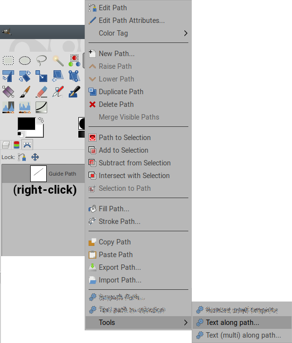
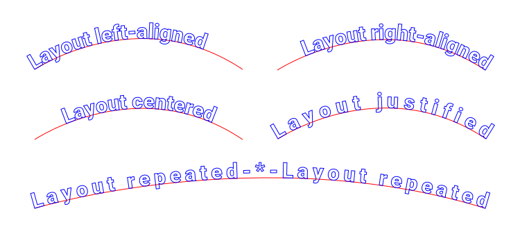
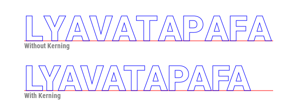
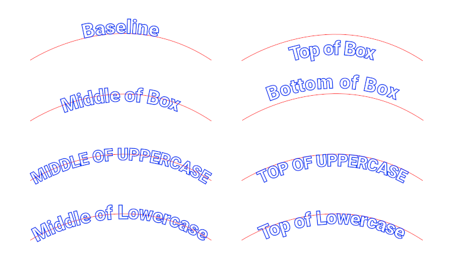
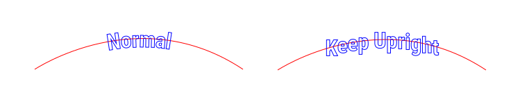
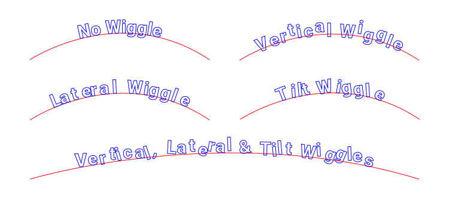
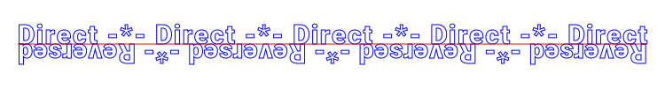
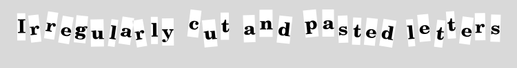

Table of Contents
This script is about “paths”, so this documentation makes a heavy use of path concepts and terminology.
For some introductory information on Gimp’s paths, see
 hereand
hereand
 there.
there.
This tool attempts to improve on the Text along path function in Gimp’s Text tool. The
improvements are:
Like the Gimp’s native version, it produces a path.
There are two different functions:
This script is called from the Paths list dialog, by right-clicking on the path used as a guide
for the text, It appears in the Tools sub-menu (at the bottom of the menu elicited by the
right-click).

The text.
The characters to be inserted between each repetition of the text, when using the Repeated
layout. On an open stroke,
this spacer is only inserted between copies of the text, and is not added to either end.
On a closed stroke, it is added to each instance of the text, so that the text+spacer cycle repeats
over the whole stroke.
The font to use. If this is left blank, the script will use the current Gimp font (the one used in the Text tool).
The font size (in pixels).
How the text is placed on the guide path stroke. Possible layouts are:
Left-aligned: the text its kept at its native width, and starts at the beginning of the
stroke.Right-aligned: the text its kept at its native width, and ends on the end of the stroke.Centered: the text its kept at its native width, and is centered in the stroke.Justified: extra space is added between the characters, so that the text is made exactly
wide enough to fill the whole stroke length.Repeated: the text is repeated as many times as can fit in the stroke, and then widened to
exactly fit the stroke.
If specified, a copy of the spacer text is inserted between each copy of the text.
The script attempts to space the letters more evenly by using
 kerning.
The kerning is obtained indirectly and may not work for all fonts; in particular, it is best left
out for italic fonts.
kerning.
The kerning is obtained indirectly and may not work for all fonts; in particular, it is best left
out for italic fonts.

Extra space inserted between all characters, to widen the text. Partial pixel values are allowed.
This is useful to give a bit more room to characters and avoid overlaps when the path stroke has a
tight curve or when using the tilt wiggle.
The Justified layout ignores this value, while the Repeated layout uses it as a minimum value
(but the actual character spacing can be wider).
How the text is positioned vertically with respect to the guide path. The box in the choices is
the boundary of the text layer that would hold the characters in the Text tool.

The actual height for Top of Uppercase, Middle of Uppercase, Top of Lowercase, Middle of Lowercase,
is computed by examining a rendering of the uppercase and lowercase of variants of X. This may
not work for “artistic” fonts.
Height adjustment, added to the height reference above. Partial pixel values are allowed.
When this is true, characters are not tilted to follow the guide path.

The maximum value for a random lateral displacement of each character. It is expressed as a percent of the average character width.
The maximum value for a random vertical displacement of each character. It is expressed as a
percent
of the height of the character box.
The maximum value for a random additional tilt for each character, in degrees.

When this is true, the characters are laid by walking the path strokes in the opposite direction. This also puts the characters on the other side of the strokes. If the path is made of several strokes, this applies to all the strokes.

These two options provide several ways to generate the paths.
Show boxes as paths is initially meant for debugging. It generates a square path around the
character box,
making more obvious how/why the character path is positioned. It was left in because it can have
more artistic uses.
Its actual output depends on the Generate selection.
Generate is the main option, the possible values are:
One single path: a single path is created to hold all character output. If boxes are
requested, an additional path is created for them.
One path per stroke: a path is created for the characters laid out on each stroke of the
guide path. This is typically used for animation.
If boxes are requested, an additional path is created for each stroke.
Separate text and spacer paths: two paths are created, one for all the characters from the
Text input, and one for all the characters
from the Spacer input. This is useful if these classes of characters do not receive the same
post-processing (color, etc…).
If boxes are requested, two additional paths are created, one of the text boxes and one for the
spacer boxes.
One path per character: A path is created for each character. If boxes are requested, the
boxes are added to that same path,
so that each path contains a character and its box.

The script can use any character that you can enter in the dialog and that is present in the font. This means that with a standard font, you have the whole set of Unicode symbols available, including emojis and such. These non-alphabetic characters are not available on a regular keyboard but can be copy/pasted from some character map (or a web page that displays them).
The script runs on all strokes of the path, considering each stroke as a separate unit. If things don’t seem to work, search for overlooked strokes (typically, single-point ones).
The text is laid out on the stroke from its starting point to its ending point.
In most cases, open strokes run from left to right and closed strokes run clockwise.
If the path contains a single stroke, the Reverse option can be used to work around this.
If there are several strokes, this option is useful only if they are all in the wrong direction.
See below for a script that can reverse the direction of specific strokes in a path.
Stroke origin is difficult to determine on closed strokes such as circles.
 This short write-upexpounds a technique to change the stroke origin of a closed stroke.
This short write-upexpounds a technique to change the stroke origin of a closed stroke.
A typical use of this script is to put text around a circle. This text is very often split in two parts, one around the top and one around the bottom. To make sure the text is centered at the top and bottom, there are two solutions:
Centered layout)Flip Path mode
of course)Centered layout). Flipping the circle has the side
effect of reversing its direction
so there is no need to use the Reverse path direction option.Centered layout)Centered layout). You will normally have to use the
Reverse path direction on that one.A result, using a flipped path, the Unicode “Anchor” symbol (U+2693) and the “Roboto Bold” font:
To make sure that the text is laid out the same way at the top and bottom, either use
Middle of Uppercase/Lowercase for both
text parts, or use Top of Uppercase/Lowercase for one and Baseline for the other.
To keep things reasonaly simple, the path generation options have been restricted to the more useful cases. It is possible to combine them by repeating the script with different generation options and discarding the unecessary output.
See my
 ofn-path-edits scriptsfor several functions that can help:
ofn-path-edits scriptsfor several functions that can help:
See my
 ofn-path-to-shape scriptto easily create circles with
known anchors, and also easily create concentric circles.
ofn-path-to-shape scriptto easily create circles with
known anchors, and also easily create concentric circles.